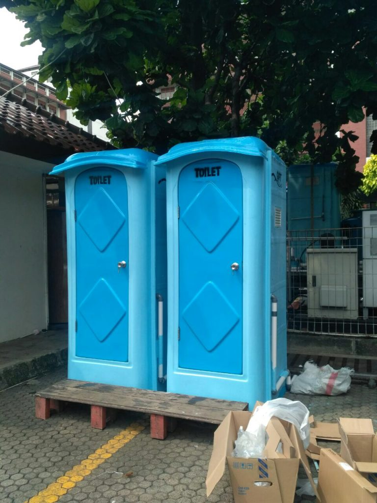
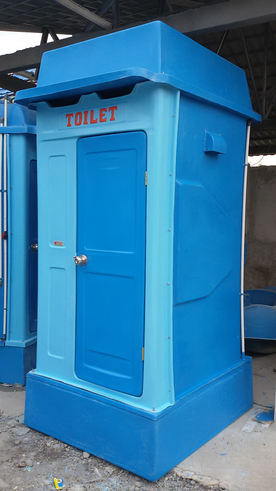
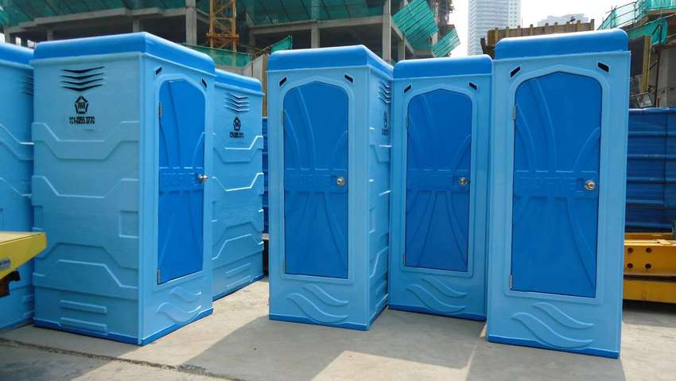

Jual & Sewa Toilet Portable (Duduk / Jongkok) untuk Event!!
Toilet Portable merupakan bilik portable sederhana yang digunakan sebagai toilet non permanen atau sementara di lokasi konstruksi atau pertemuan besar karena daya tahan dan kenyamanannya. Toilet Portable dinilai menjadi solusi tepat dan terbaik untuk Anda yang sedang mengadakan pembangunan, proyek, event, ataupun hal lain yang tidak bisa mengakses kamar mandi dekat di lingkungan sekitar.
Pada dasarnya, Toilet Portable memang sangat praktis sebab dapat digunakan untuk keperluan outdoor maupun indoor, juga sangat fleksibel karena mudah dipindahkan dan penggunaannya pun sangat efektif dan efisien. Jadi bagi Anda yang saat ini sedang membutuhkan Toilet Portable untuk keperluan acara Anda, toiletphenolic.co.id adalah jawaban terbaik untuk Anda.

Butuh Toilet Portable dalam Waktu Lama?
Toiletphenolic.co.id adalah perusahaan yang menyediakan jasa persewaan Toilet Portable yang bisa disewa per hari, per minggu, hingga satu bulan, dengan begitu Anda akan lebih menghemat biaya. Anda bisa langsung menghubungi customer service kami apabila tertarik dan berminat untuk menggunakan layanan yang kami sediakan.

Jual & Sewa Toilet Portable
Toiletphenolic.co.id menyediakan layanan rental Toilet Portable modern untuk berbagai kebutuhan acara Anda baik outdoor maupun indoor, baik untuk proyek konstruksi, pameran, konser, dan lain sebagainya. Kehadiran Toilet Portable sebagai fasilitas toilet umum ini sangat membantu Anda dalam menyediakan layanan toilet tanpa harus repot –repot membangunnya terlebih dahulu. Bagi Anda yang sedang membutuhkan Toilet Portable, perusahaan kami bisa Anda jadikan sebagai pilihan terbaik untuk Anda, silahkan hubungi kami untuk informasi lebih lengkap terkait layanan yang kami sediakan. Anda bisa menyewa toiler portable ini dalam hitungan hari, minggu, bahkan bulan.
Harga Sewa Toilet Portable
Harga yang kami tawarkan untuk rental Toilet Portable ini sangat terjangkau dan ekonomis, Anda bisa menghubungi customer service kami untuk mendapatkan informasi lebih lengkapnya. Setiap jenis Toilet Portable yang kami tawarkan memiliki harga yang berbeda namun tetap ramah untuk kantong Anda, jadi Anda tidak perlu khawatir dan segera hubungi kami untuk melakukan pemesanan.

ToiletPhenolic.co.id

Cara Pemesanan Produk Toilet Portable
Hubungi kami untuk lakukan konsultasi terkait kebutuhan produk toilet portable yang saat ini anda cari
Setelah mengetahui kebutuhan anda, kami akan membuat rancangan desain dan biaya yang harus anda siapkan
Setelah harga dealing anda hanya perlu menunggu proses pembuatan produk phenolic yang anda pesan jadi
Kami akan segera mengunjungi lokasi anda untuk melakukan pemasangan produk toilet portable yang anda pesan sesuai dengan kesepakatan awal
KegunaanToilet Portable Pada Kegiatan Outdoor
Toilet Portable yang kami tawarkan sudah dilengkapi dengan fasilitas torena ir dan juga septic tank guna mekengkapi kelengkapan standarnya. Toilet Portable sangat penting sekali keberadaannya dalam menjaga kebersihan pada tempat umum karena toilet ini dapat diletakkan di manapun dan dipindahkan kapanpun juga. Selain digunakan untuk beberapa temapt umum, tidak sedikit pula kegiatan outdoor yang membutuhkan Toilet Portable ini sebab toilet adalah kebutuhan primer manusia yang tidak bisa diabaikan begitu saja.

Anda tentu sudah tidak asing lagi bukan dengan Toilet Portable ini, karena memang saat ini kehadirannya sudah sangat mudah untuk dijumpai, baik di mall, di kantor, maupun ketika event berlangsung, hal tersebut dikarenakan Toilet Portable merupakan fasilitas utama yang tidak bisa diabaikan begitu saja. Berikut ini adalah beberapa kelebihan dari Toilet Portable yang perlu Anda ketahui, yaitu :
Toilet Portable sangat cocok dan nyaman untuk digunakan, itulah mengapa penggunaannya sangat direkomendasikan sekali, selain itu Toilet Portable juga lebih ekonomis
Toilet Portable yang kami sediakan sudah dilengkapi dengan fasiltias atau fitur terbaik sehingga membuat Anda dan siapapun yang menggunakan merasa nyaman.
Tersedia dalam berbagai jenis yang bisa Anda pilih sesuai keinginan & kebutuhan Anda.
Ramah terhadap lingkungan.
Macam – macam Toilet Portable
Toilet Portable yang kami sediakan untuk Anda juga tersedia dalam berbagai macam yang bisa Anda sesuaikan dengan kebutuhan. Pemakaiannya dinilai sangat efektif dan efisien sebab fleksibilitas yang dimiliki dapat memudahkan Anda untuk memasang atau memindahkannya. Berikut ini adalah beberapa macam Toilet Portable yang kami sediakan :
Toilet portale standar yang kami tawarkan sudah dibekali dengan fasilitas kloset jongkok dan ukurannya pun standar yaitu 2,3 x 1,2 x 1,2 meter dengan tangki air berukuran 250 liter dan tangki pembuangannya 265 liter.
Toilet VIP pada dasarnya digunakan untuk Anda yang akan mengadakan acara indoor seperti wedding, gathering kantor, dan sebagainya yang dilengkapi dengan fasilitas tambahan berupa lampu, tissue, pewangi, dan jet sprayer. Ukurannya tidak jauh berbeda dengan jenis standar hanya saja pada tangki pembuangannya, Toilet Portable VIP ini lebih besar yaitu 280 liter.
Bagi Anda yang akan menggelar acara penting dengan tamu undangan yaitu orang – orang penting, Toilet Portable jenis ini adalah solusi terbaik untuk Anda. Dilengkapi pula dengan fasilitas tambahan berupa westafel dengan tangki pembuangannya yang jauh lebih besar yaitu 333 liter.
Toilet Portable yang kami sediakan untuk Anda juga tersedia dalam berbagai macam yang bisa Anda sesuaikan dengan kebutuhan. Pemakaiannya dinilai sangat efektif dan efisien sebab fleksibilitas yang dimiliki dapat memudahkan Anda untuk memasang atau memindahkannya. Berikut ini adalah beberapa macam Toilet Portable yang kami sediakan :
Toilet Portable jenis yang satu ini mempunyai tempat penampungan kotoran yang harus dikuras ketika penuh guna bisa digunakan kembali.
Sedangkan untuk jenis yang satu ini, septic tank yang ada akan disambung dengan pipa pembuangan dan limbah kotoran akan disalurkan pada tempat pembuangan, selain itu pipa yang digunakan adalah pipa berstandar SNI sehingga kualitasnya tidak perlu diragukan lagi.